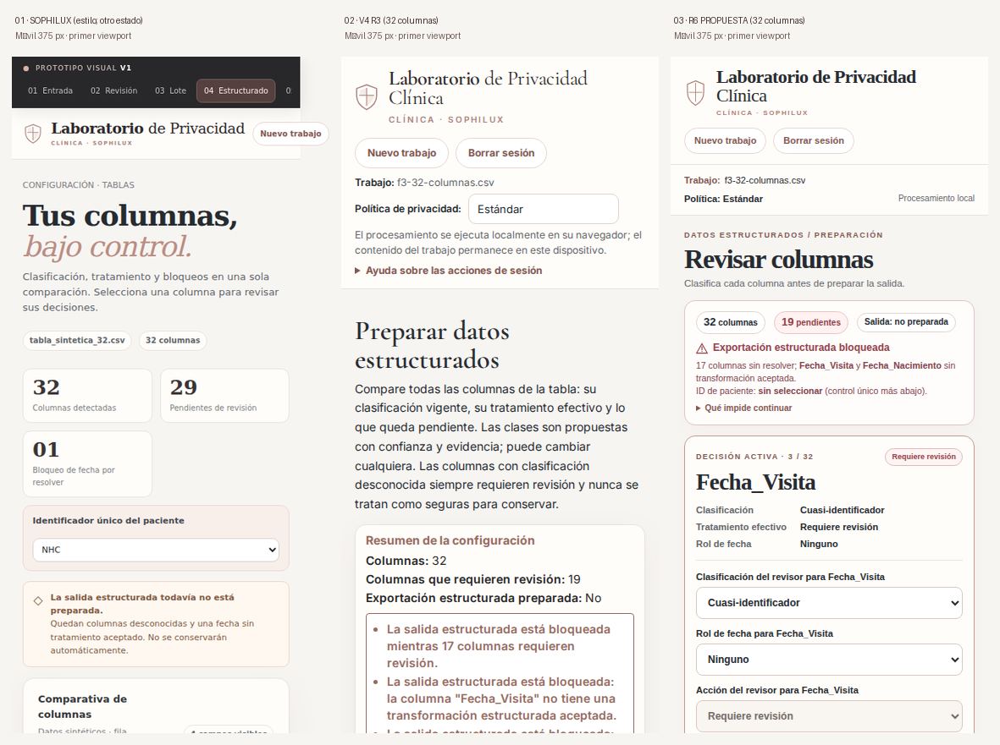

Comparación visual · móvil 375 px

Lo que cambia
La columna seleccionada y sus controles de clasificación, rol y acción aparecen antes de la tabla larga. El selector queda en torno a 627 px de altura.
Lo que no cambia
La tabla conserva sus cuatro campos y todas las columnas. Se mantiene una única autoridad de ID de paciente, el bloqueo, el significado de las acciones y los detalles accesibles.
Qué requiere decisión
La maqueta propone navegación entre pendientes y un filtro visual. Son exclusivamente de presentación; cualquier implementación real deberá reutilizar el estado canónico, sin crear una segunda revisión.
El maestro aprobado no tiene el mismo conjunto de datos que R6. Las imágenes comparan identidad y jerarquía, no una igualdad píxel a píxel ni una prueba de funcionamiento. Todos los datos de la maqueta son sintéticos.